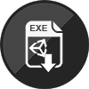

Marie-Pier Emond - Game Designer

Colour Fall est un jeu qui se joue en équipe de deux. Les deux joueurs doivent entrer en contact avec tout élément de sa propre couleur afin de ramasser des points et de ne pas en perdre. Les joueurs peuvent échanger leur couleur selon la situation.
Colour Fall a été réalisé avec Cédric Chabot, Pierre-Olivier Hudon, Vincent Côté et Alex Arsenault Desjardins dans le cadre du Global Game Jam 2018.

Marie-Pier Emond - Game Designer